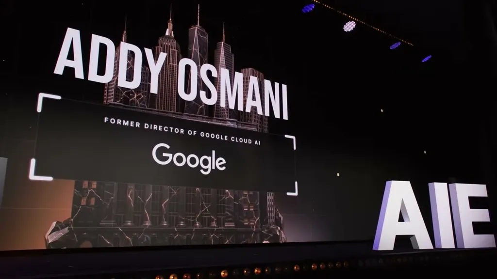
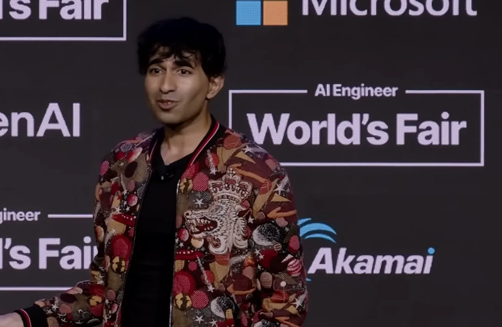
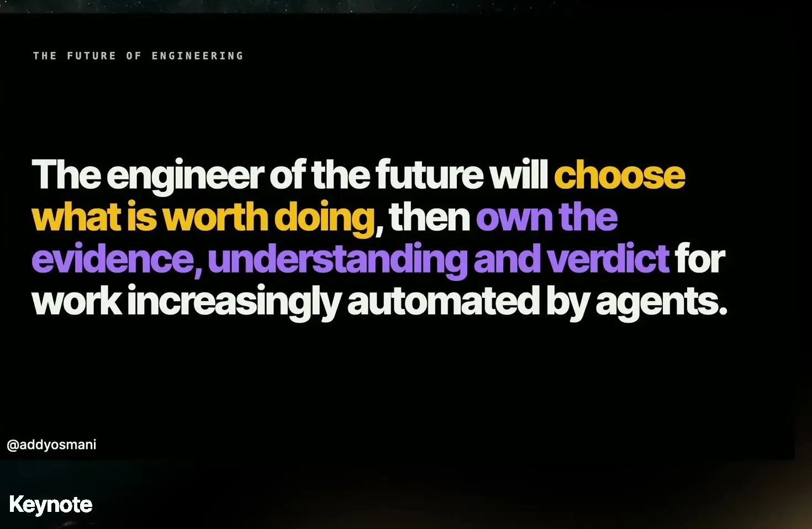
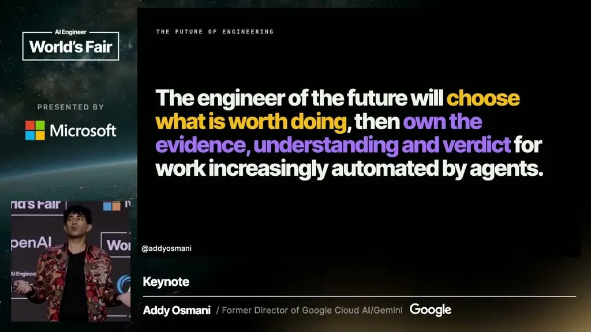
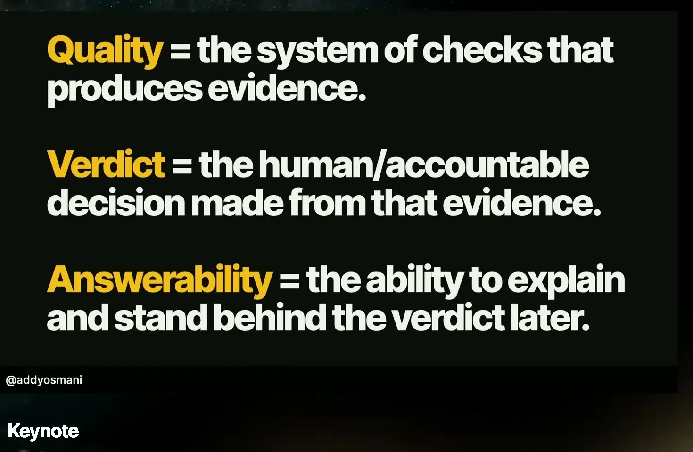
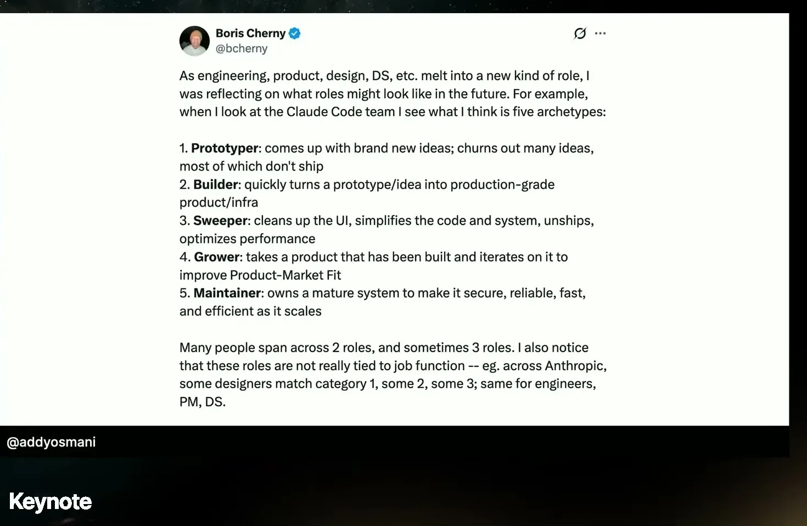
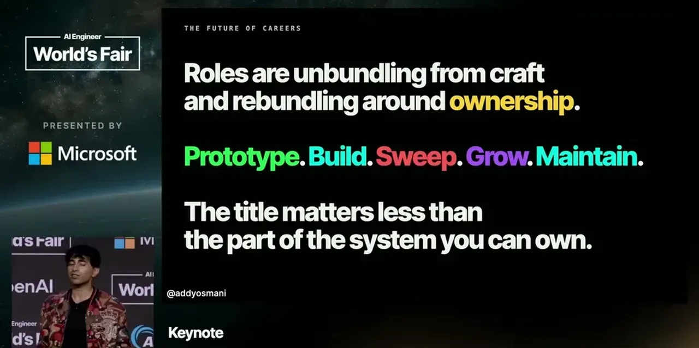
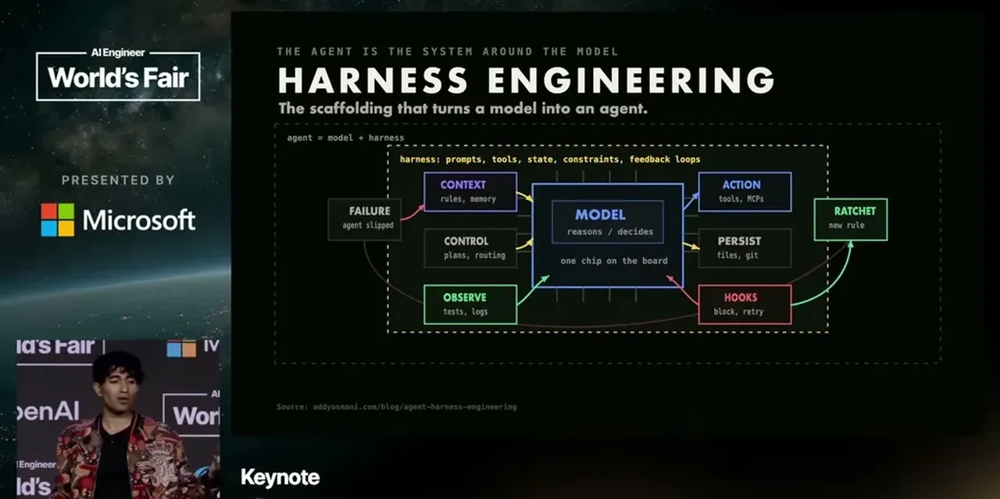
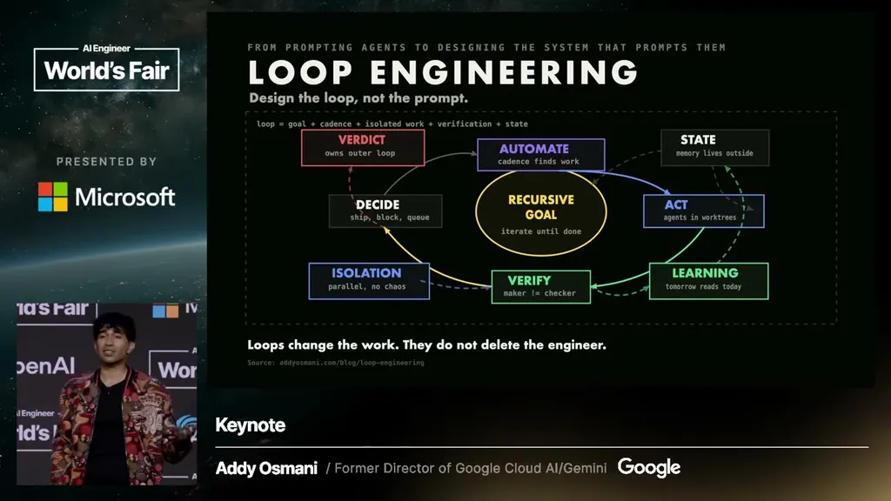
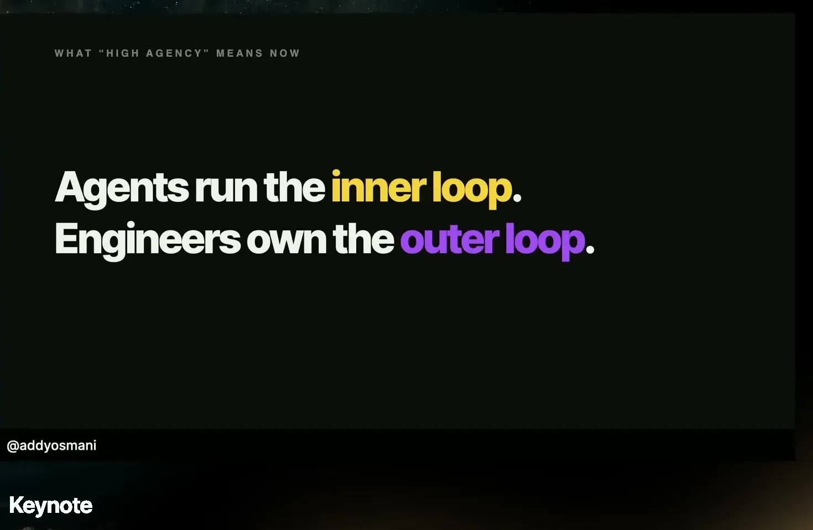

Osmani names concrete failure modes teams hit as agents write more code: cognitive debt from delegating without understanding, cognitive surrender to wrong-but-confident AI answers, and orchestration tax from running many agents at once
This traces Osmani's argument from AI code becoming mainstream through the failure modes he names to his proposed shipping rule (ours).
“One of Sonar's 2026 survey said that AI-assisted code is no longer marginal.”
said at 03:34“Another one of Sonar's research uh studies found that clean and messy repos had roughly the same pass rates, but clean code actually used fewer tokens and caused fewer revisits.”
said at 04:05“If 96% of people don't fully trust that code, but only about half always verify before committing, we have this danger that we've got distrust without bandwidth.”
said at 04:40“When AI was wrong, 73% of people still thought that they they you know they picked the wrong answer and they felt more sure.”
said at 11:25“Taste is the ability to make high-quality qualitative judgments where no objective metric exists yet.”
said at 07:10“cognitive debt is the erosion of your understanding and memory around how to solve problems.”
said at 09:45“More AI agents running does not mean that there is more of you available. Your cognitive bandwidth does not parallelize.”
said at 11:52“the boundary is not human looks at AI output. The boundary is evidence and responsibility. So, here's an operational rule. Explain it or don't ship it.”
said at 16:10“Automation moves the floor for all of us. Engineering continues to move up a level”
said at 17:05









| Stance | Claim | t |
|---|---|---|
| asserts | Sonar's 2026 survey found AI-assisted code is no longer a marginal share of codebases. | 03:34 |
| asserts | Clean and messy repos had similar pass rates, but clean code used fewer tokens and caused fewer revisits. | 04:05 |
| warns | Most engineers distrust AI code but lack the capacity to verify all of it before committing. | 04:40 |
| warns | People report feeling more confident even when AI's answer was wrong, per a Wharton study. | 11:25 |
| asserts | Taste is defined as the ability to make quality judgments where no objective metric yet exists. | 07:10 |
| warns | Over-delegating to agents erodes an engineer's own understanding of the systems they ship. | 09:45 |
| warns | Running more agents in parallel does not increase a human's capacity to review their output. | 11:52 |
| recommends | Code should only ship if someone can explain and defend it, not merely glance at it. | 16:10 |
| predicts | Automation lowers the floor of engineering work without reducing the need for engineers overall. | 17:05 |
Machine-readable copy embedded in this page (script#ontology) and in the corpus ontology.